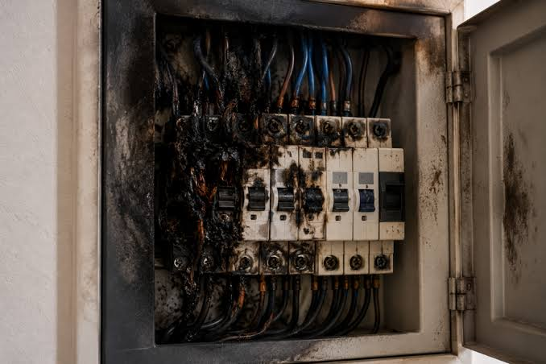
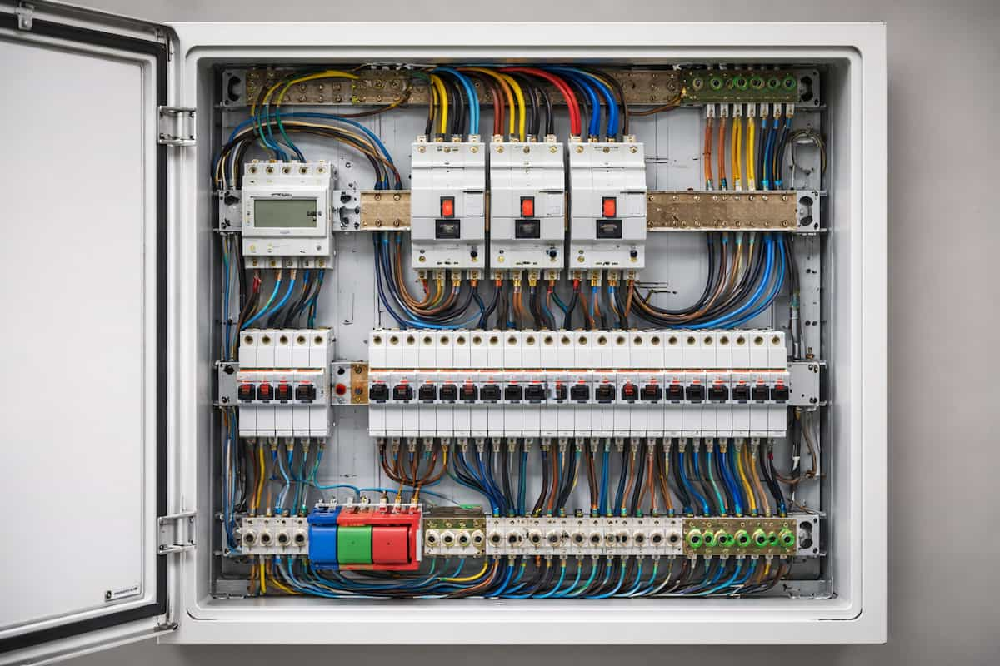
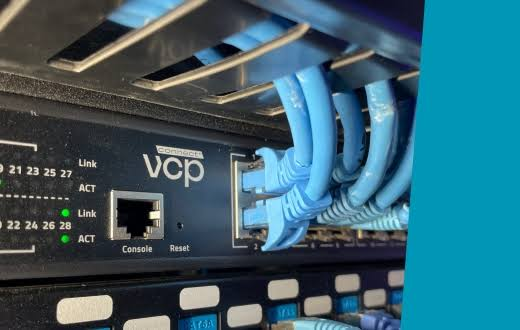
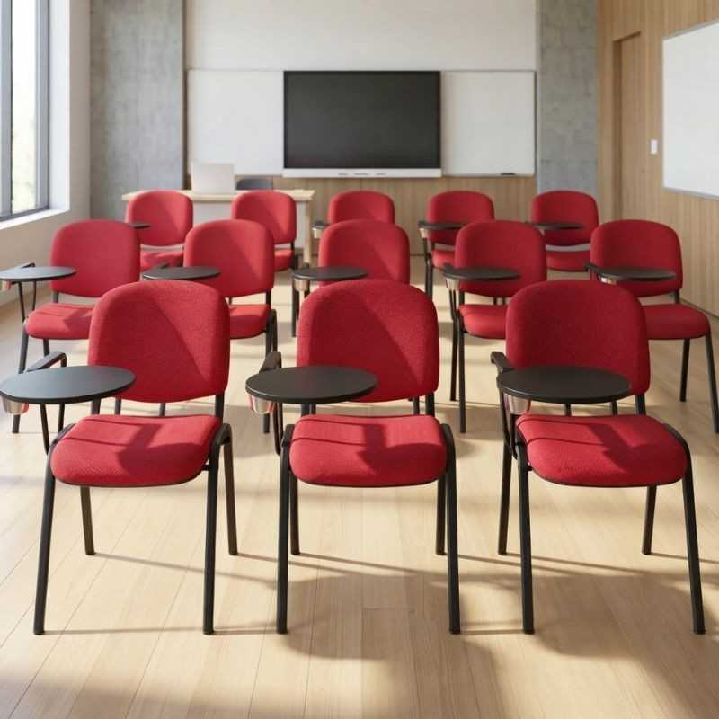
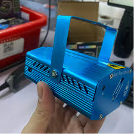

CampusCare digitaliza el reporte y remediación de anomalías físicas en las instalaciones de la UTP. Sustituye bitácoras de papel mediante escaneo QR en aulas, laboratorios y talleres, validación fotográfica obligatoria de cierre y métricas de atención en tiempo real.
100%
Trazabilidad con QR
< 1.5s
Sincronización RNF-04
-65%
Reducción en MTTR
Edificio K • UTP Puebla • Aula 104

Problemática y Alineación con la Agenda 2030
CampusCare no es un simple gestor de tareas; es un modelo sustentable para erradicar vicios operativos en campus educativos y cumplir metas globales de sostenibilidad.
Reportes en pasillos, correos que se ignoran o libretas de mantenimiento que se extravían sin folio ni responsable formal asignado.
Servicios generales desconoce el tiempo medio de resolución (MTTR), los edificios con mayor tasa de falla y las piezas de mayor recambio.
El alumno o maestro no recibe confirmación cuando reporta una falla. La sensación de falta de respuesta desalienta el cuidado colectivo.
Integrado como criterio evaluable para acreditaciones de calidad y certificaciones de campus sustentables en la UTP.
Moderniza la gestión operativa mediante tecnologías móviles nativas, código QR y arquitecturas de software reactivas.
Detección oportuna de fugas hidrosanitarias y consumos anómalos de energía eléctrica, reduciendo la huella de carbono escolar.
Maximiza el ciclo de vida de proyectores, butacas e infraestructura eléctrica mediante mantenimientos correctivos en menos de 24 horas.
El Proceso Operativo de CampusCare UTP
Cada incidencia atraviesa un flujo determinista con roles claros y validaciones técnicas en cada transición.
El docente o alumno escanea la etiqueta en la puerta del aula. La app precarga edificio, piso y número de aula sin error tipográfico.
Captura fotográfica de la avería, selección de categoría (ej. Red/TI) y descripción obligatoria. Genera folio único cifrado en SQLite/Room.
El coordinador de servicios generales evalúa la prioridad y asigna al técnico idóneo. Se dispara notificación push automática.
Regla inquebrantable: El técnico debe subir obligatoriamente la foto del trabajo concluido para pasar el estado a RESUELTO.
El usuario califica la solución recibida. El sistema calcula los tiempos reales y actualiza el indicador de cumplimiento de SLA institucional.
Video explicativo de la interacción física-digital: desde la detección de la avería en instalaciones de la UTP hasta la resolución y captura de evidencia.
Muestra interactiva de auditoría: desliza para contrastar el estado inicial reportado contra el trabajo finalizado por el personal de mantenimiento de la UTP.
Edificio E (Ingenierías UTP) • Laboratorio de Máquinas Eléctricas • Solucionado en 4.2 hrs


Edificio AReportado: Red inestable en Centro de Cómputo 1.
Prevención de desperdicio hídrico (ODS 11).

Edificio DAcondicionamiento para 120 alumnos en Aula Magna.

Edificio KAlineación óptica y sustitución de cable HDMI.
Prueba el flujo como si fueras un evaluador: simula el escaneo del código QR de un aula de la UTP, levanta una incidencia y transiciona la máquina de estados hasta su cierre con evidencia fotográfica.
Selecciona el código QR de prueba situado en el campus UTP:
✓ Ticket inicializado en estado ABIERTO.